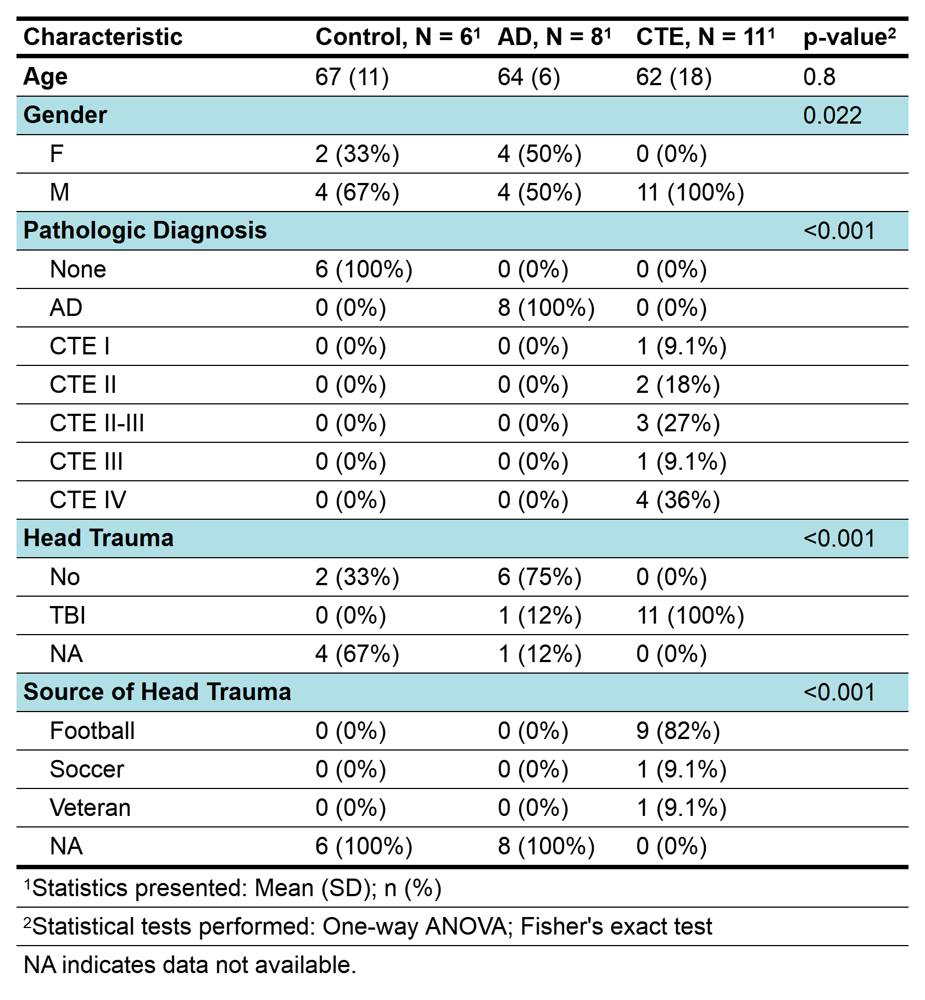

Chapter 48 Making Publication Quality Tables in R
Ashlyn Johnson, last edited: January 2021
library(tidyverse)
library(knitr)
library(gtsummary)
library(flextable)Tables are extremely useful because they can efficiently display immense amounts of data at once. Fortunately, we can leverage R and it’s statistical prowess to calculate and beautifully display summary statistics in publication quality tables with just a few lines of code. No more tedious formatting in Microsoft Word! Plus, making your tables in R is reproducible. This means that you can go from your raw data to a high quality table in one R script or markdown document and someone else can clearly see how you arrived at your final product.
This tutorial will primarily make use of the packages {gtsummary} and {flextable}. Each package has its caveats and each package differs in its ability to knit to different formats from RMarkdown (i.e. HTML, Word, PowerPoint, PDF). I’ve found it most useful to save my table as an image which I can then insert into any document that I need to, including back into my RMarkdown file. I will also very briefly highlight other packages that can be used for tables and I encourage you to explore their webpages to understand their different features and uses.
48.1 gtsummary
The {gtsummary} package has a lot of really great features for automatically summarizing dataframes and even calculating statistics with a few lines of code.
48.1.1 Example 1: chickwts
To start of with a simple example, let’s take a look at the chickwts dataset that’s built into R. Newly hatched chicks were randomly assigned to one of 6 different types of feed supplement. After 6 weeks, their weights (grams) were recorded. This dataset has two columns: weight and feed. If we use the tbl_summary() function and specify feed as the variable by which we want to group the data, we can very easily view the median weight and interquartile range (IQR) of the weights in of the chicks in each group. We can also easily see how many chicks were in each group, as noted by N =.
data("chickwts")
chickwts %>%
tbl_summary(by = "feed")| Characteristic | casein, N = 121 | horsebean, N = 101 | linseed, N = 121 | meatmeal, N = 111 | soybean, N = 141 | sunflower, N = 121 |
|---|---|---|---|---|---|---|
| weight | 342 (277, 371) | 152 (137, 176) | 221 (178, 258) | 263 (250, 320) | 248 (207, 270) | 328 (313, 340) |
|
1
Statistics presented: Median (IQR)
|
||||||
What if we want to quickly test if there is a difference in weight between chicks that were fed different types of feed supplements? We can use the add_p() function.
chickwts %>%
tbl_summary(by = "feed") %>%
add_p()| Characteristic | casein, N = 121 | horsebean, N = 101 | linseed, N = 121 | meatmeal, N = 111 | soybean, N = 141 | sunflower, N = 121 | p-value2 |
|---|---|---|---|---|---|---|---|
| weight | 342 (277, 371) | 152 (137, 176) | 221 (178, 258) | 263 (250, 320) | 248 (207, 270) | 328 (313, 340) | <0.001 |
|
1
Statistics presented: Median (IQR)
2
Statistical tests performed: Kruskal-Wallis test
|
|||||||
Of course, there are many ways to modify this output, including specifying which summary statistics are presented. For example, if we wanted to display the mean and standard deviation of the weights of the chicks in each group instead of the median and IQR, we could modify the statistic argument in the tbl_summary() function.
chickwts %>%
tbl_summary(by = "feed",
statistic = list(all_continuous() ~ "{mean} ({sd})")) %>%
add_p()| Characteristic | casein, N = 121 | horsebean, N = 101 | linseed, N = 121 | meatmeal, N = 111 | soybean, N = 141 | sunflower, N = 121 | p-value2 |
|---|---|---|---|---|---|---|---|
| weight | 324 (64) | 160 (39) | 219 (52) | 277 (65) | 246 (54) | 329 (49) | <0.001 |
|
1
Statistics presented: Mean (SD)
2
Statistical tests performed: Kruskal-Wallis test
|
|||||||
Furthermore, while the default statistical test for continuous variables is the Kruskal-Wallis Test, we can change the statistical test using the test argument in the add_p() function.
chickwts %>%
tbl_summary(by = "feed",
statistic = list(all_continuous() ~ "{mean} ({sd})")) %>%
add_p(test = list(weight ~ "aov"))| Characteristic | casein, N = 121 | horsebean, N = 101 | linseed, N = 121 | meatmeal, N = 111 | soybean, N = 141 | sunflower, N = 121 | p-value2 |
|---|---|---|---|---|---|---|---|
| weight | 324 (64) | 160 (39) | 219 (52) | 277 (65) | 246 (54) | 329 (49) | <0.001 |
|
1
Statistics presented: Mean (SD)
2
Statistical tests performed: One-way ANOVA
|
|||||||
Finally, while a table is nice for displaying data, we usually have to write up the results of our statistical tests in the results section of a manuscript. The {gtsummary} package even has a function to make that easier called the inline_text() function. You can actually use this command inside of the text of your RMarkdown report if you’ve assigned your table to a variable or object name.
chick_table <- chickwts %>%
tbl_summary(by = "feed",
statistic = list(all_continuous() ~ "{mean} ({sd})")) %>%
add_p(test = list(weight ~ "aov"))Writing this text in RMarkdown (but not in a code chunk!)…
The mean (sd) weight (g) of chicks fed casein is
`r inline_text(chick_table, variable = weight, column = casein)`r, while the mean (sd) weight of chicks fed linseed is`r inline_text(chick_table, variable = weight, column = linseed)`r.
will yield this result:
The mean (sd) weight (g) of chicks fed casein is 324 (64), while the mean (sd) weight of chicks fed linseed is 219 (52).
While using this inline_text() function may initially seem clunky, it actually allows you to write your reports in reproducible way and prevents errors that could arise from transcribing your results from R to another document.
48.2 Using {gtsummary} and {flextable} together
48.2.1 Example 2: Metadata for Post-mortem Human Brain Samples
As biomedical scientists, an example use case for this package would be a demographics table for a study involving human participants. For these types of studies, it’s important to display variables like age or sex for the participants in each experimental group. It is also important to know if any of those variables significantly differ between groups.
For this example, I will be using metadata collected from Supplementary Table S1 of Cherry et al., 2018. J Neuropathol Exp Neurol. In this study, the authors performed quantitative proteomics on post-mortem human brain samples from control subjects and subjects with Alzheimer’s disease (AD) and Chronic Traumatic Encephalopathy (CTE). I will create a summary sample to highlight important traits for samples that were used in the proteomic experiments.
Here is the raw data:
cherry2018raw <- read_csv("datasets/cherry2018JNEN.csv", col_names = FALSE)##
## -- Column specification --------------------------------------------------------
## cols(
## .default = col_character(),
## X12 = col_logical()
## )
## i Use `spec()` for the full column specifications.head(cherry2018raw, n = 30)## # A tibble: 30 x 22
## X1 X2 X3 X4 X5 X6 X7 X8 X9 X10 X11 X12 X13
## <chr> <chr> <chr> <chr> <chr> <chr> <chr> <chr> <chr> <chr> <chr> <lgl> <chr>
## 1 Supp~ <NA> <NA> <NA> <NA> <NA> <NA> <NA> <NA> <NA> <NA> NA <NA>
## 2 <NA> <NA> <NA> <NA> <NA> <NA> <NA> <NA> <NA> <NA> <NA> NA <NA>
## 3 CONT~ <NA> <NA> <NA> <NA> <NA> <NA> <NA> <NA> <NA> <NA> NA CTE
## 4 Case Age Gend~ Path~ Prot~ Hist~ Braak CERA~ TDP-~ a-syn Head~ NA Case
## 5 <NA> <NA> <NA> <NA> <NA> <NA> <NA> <NA> <NA> <NA> <NA> NA <NA>
## 6 Cont~ 83 M None <NA> x I 0 n/a n/a No NA CTE 1
## 7 Cont~ 83 F None <NA> x II 2 n/a n/a No NA CTE 2
## 8 Cont~ 87 F None <NA> x II 0 n/a n/a No NA CTE 3
## 9 Cont~ 88 F None <NA> x III 2 n/a n/a No NA CTE 4
## 10 Cont~ 84 F None <NA> x I 0 n/a n/a n/a NA CTE 5
## # ... with 20 more rows, and 9 more variables: X14 <chr>, X15 <chr>, X16 <chr>,
## # X17 <chr>, X18 <chr>, X19 <chr>, X20 <chr>, X21 <chr>, X22 <chr>If you were to open this file in Excel, you would see that it is not in optimal form for us to easily make a table. (This is also evident by the output of the head() command above.) So, here, I will do some cleaning in the below chunk. As the purpose of this tutorial is for how to make tables, I will not walk you through each step but hopefully the code and comments will make it clear what I am doing.
# isolating control and AD data
cherry2018ctrlAD <- cherry2018raw %>%
select(1:11) %>%
slice(c(-1:-3,-5,-21:-24)) %>% # removing empty/unnecessary rows
slice(1:39) %>% # grabbing only the rows we want
setNames(slice(., 1)) %>% # generating column names from the first row
slice(-1) %>% # removing the row with column names as it is now not needed
filter(Proteomics == "x") %>% # only want to look at samples used for proteomics
mutate("ID" = str_replace_all(Case, " ", "_"),
"Case" = str_remove_all(Case, "\\d")) %>%
rename("Disease" = "Case",
"Head Trauma" = "Head trauma?") %>%
relocate("ID", .after = "Disease") %>%
select(-c("Proteomics", "Histology")) %>%
map(~ str_replace_all(
string = .x,
pattern = "n/a",
replacement = "NA"
)) %>% # replacing "n/a" with "Not Available"
as_tibble()
# isolating CTE data
cherry2018CTE <- cherry2018raw %>%
select(13:22) %>% # selecting only columns with CTE data
slice(c(-1:-3,-5)) %>% # removing unnecessary rows
setNames(slice(., 1)) %>% # generating column names from the first row
slice(-1) %>%
filter(Proteomics == "x") %>% # only want to look at samples used for proteomics
mutate(
"ID" = str_replace_all(Case, " ", "_"),
"Case" = str_remove_all(Case, "\\d"),
"Head Trauma" = rep("TBI", length(Proteomics))
) %>%
rename("Disease" = "Case") %>%
relocate("ID", .after = "Disease") %>%
relocate("Head Trauma", .before = "Source of Head Trauma") %>%
select(-c("Proteomics", "Histology"))
# combining data frames and a little extra cleaning
cherry2018clean <- bind_rows(cherry2018ctrlAD, cherry2018CTE) %>%
replace_na(., list("Source of Head Trauma" = "NA",
"Braak" = "NA")) %>%
mutate("Age" = as.integer(Age),
"Disease" = str_remove_all(`Disease`, " ")) # removing extra space at the end of the textAfter all that cleaning, he have nice little dataframe that we can use to create a summary table. First, let’s look and see what variables we have and decide what variables we want to display in our summary table:
glimpse(cherry2018clean)## Rows: 25
## Columns: 11
## $ Disease <chr> "Control", "Control", "Control", "Control",...
## $ ID <chr> "Control_10", "Control_11", "Control_12", "...
## $ Age <int> 46, 66, 69, 70, 74, 78, 65, 55, 72, 64, 71,...
## $ Gender <chr> "F", "M", "M", "F", "M", "M", "F", "M", "F"...
## $ `Pathologic Diagnosis` <chr> "None", "None", "None", "None", "None", "No...
## $ Braak <chr> "0", "II", "II", "I", "II", "II", "VI", "V"...
## $ `CERAD or TAP` <chr> "0", "0", "0", "0", "0", "0", "C", "C", "C"...
## $ `TDP-43` <chr> "NA", "Yes", "No", "NA", "No", "No", "No", ...
## $ `a-syn` <chr> "No", "NA", "No", "NA", "No", "No", "No", "...
## $ `Head Trauma` <chr> "NA", "NA", "NA", "NA", "No", "No", "NA", "...
## $ `Source of Head Trauma` <chr> "NA", "NA", "NA", "NA", "NA", "NA", "NA", "...For the purpose of this table, we will display the following variables:
* Disease
* Age
* Gender
* Pathologic Diagnosis
* Head Trauma
* Source of Head Trauma
To start, we will construct the table in a very similar fashion as to the table that we made with the chickwts dataset. We will group by "Disease".
cherry2018clean %>%
select( # selecting our variables
c(
"Disease",
"Age",
"Gender",
"Pathologic Diagnosis",
"Head Trauma",
"Source of Head Trauma"
)
) %>%
tbl_summary(by = "Disease", # grouping by the Disease variable
statistic = list(all_continuous() ~ "{mean} ({sd})")) %>%
add_p(test = list("Age" ~ "aov"))| Characteristic | AD, N = 81 | Control, N = 61 | CTE, N = 111 | p-value2 |
|---|---|---|---|---|
| Age | 64 (6) | 67 (11) | 62 (18) | 0.8 |
| Gender | 0.022 | |||
| F | 4 (50%) | 2 (33%) | 0 (0%) | |
| M | 4 (50%) | 4 (67%) | 11 (100%) | |
| Pathologic Diagnosis | <0.001 | |||
| AD | 8 (100%) | 0 (0%) | 0 (0%) | |
| CTE I | 0 (0%) | 0 (0%) | 1 (9.1%) | |
| CTE II | 0 (0%) | 0 (0%) | 2 (18%) | |
| CTE II-III | 0 (0%) | 0 (0%) | 3 (27%) | |
| CTE III | 0 (0%) | 0 (0%) | 1 (9.1%) | |
| CTE IV | 0 (0%) | 0 (0%) | 4 (36%) | |
| None | 0 (0%) | 6 (100%) | 0 (0%) | |
| Head Trauma | <0.001 | |||
| NA | 1 (12%) | 4 (67%) | 0 (0%) | |
| No | 6 (75%) | 2 (33%) | 0 (0%) | |
| TBI | 1 (12%) | 0 (0%) | 11 (100%) | |
| Source of Head Trauma | <0.001 | |||
| Football | 0 (0%) | 0 (0%) | 9 (82%) | |
| NA | 8 (100%) | 6 (100%) | 0 (0%) | |
| Soccer | 0 (0%) | 0 (0%) | 1 (9.1%) | |
| Veteran | 0 (0%) | 0 (0%) | 1 (9.1%) | |
|
1
Statistics presented: Mean (SD); n (%)
2
Statistical tests performed: One-way ANOVA; Fisher's exact test
|
||||
This is a great start to a table but there’s a couple of things I’m noticing that I would like to change before I deem the table ‘publication quality’. First, I don’t really like the order in which some of the variables are displayed. For instance, I would like the disease groups to displayed in the following order: Control, AD, and CTE. I can fix this by converting the columns from character vectors to factor variables and using the levels = argument to specify what order I want the variables to be displayed in. .
cherry2018table <- cherry2018clean %>%
select(
c(
"Disease",
"Age",
"Gender",
"Pathologic Diagnosis",
"Head Trauma",
"Source of Head Trauma"
)
) %>%
mutate(# changing all of these variables to factors
"Disease" = factor(`Disease`, levels = c("Control", "AD", "CTE")),
"Pathologic Diagnosis" = factor(`Pathologic Diagnosis`, levels = c("None", "AD", "CTE I", "CTE II", "CTE II-III", "CTE III", "CTE IV")),
"Head Trauma" = factor(`Head Trauma`, levels = c("No", "TBI", "NA")),
"Source of Head Trauma" = factor(`Source of Head Trauma`, levels = c("Football", "Soccer", "Veteran", "NA"))
) %>%
tbl_summary(by = "Disease", # grouping by the Disease variable
statistic = list(all_continuous() ~ "{mean} ({sd})")) %>%
add_p(test = list("Age" ~ "aov"))
cherry2018table| Characteristic | Control, N = 61 | AD, N = 81 | CTE, N = 111 | p-value2 |
|---|---|---|---|---|
| Age | 67 (11) | 64 (6) | 62 (18) | 0.8 |
| Gender | 0.022 | |||
| F | 2 (33%) | 4 (50%) | 0 (0%) | |
| M | 4 (67%) | 4 (50%) | 11 (100%) | |
| Pathologic Diagnosis | <0.001 | |||
| None | 6 (100%) | 0 (0%) | 0 (0%) | |
| AD | 0 (0%) | 8 (100%) | 0 (0%) | |
| CTE I | 0 (0%) | 0 (0%) | 1 (9.1%) | |
| CTE II | 0 (0%) | 0 (0%) | 2 (18%) | |
| CTE II-III | 0 (0%) | 0 (0%) | 3 (27%) | |
| CTE III | 0 (0%) | 0 (0%) | 1 (9.1%) | |
| CTE IV | 0 (0%) | 0 (0%) | 4 (36%) | |
| Head Trauma | <0.001 | |||
| No | 2 (33%) | 6 (75%) | 0 (0%) | |
| TBI | 0 (0%) | 1 (12%) | 11 (100%) | |
| NA | 4 (67%) | 1 (12%) | 0 (0%) | |
| Source of Head Trauma | <0.001 | |||
| Football | 0 (0%) | 0 (0%) | 9 (82%) | |
| Soccer | 0 (0%) | 0 (0%) | 1 (9.1%) | |
| Veteran | 0 (0%) | 0 (0%) | 1 (9.1%) | |
| NA | 6 (100%) | 8 (100%) | 0 (0%) | |
|
1
Statistics presented: Mean (SD); n (%)
2
Statistical tests performed: One-way ANOVA; Fisher's exact test
|
||||
Great! So now all of the data is in the correct order. The last part of the process for this table will be to convert it into a flextable object. In this format, we can make additional edits to the format of the table as well as save it as a PNG for use in powerpoints, manuscripts, etc. {flextable} has a number of built-in themes that are worth taking a look at. However, theme_vanilla() works pretty well for a simple, easy to read, yet compact table.
cherry2018table %>%
gtsummary::as_flex_table() %>% # converts gtsummary table to flextable
theme_vanilla() # built-in flextable themeCharacteristic | Control, N = 61 | AD, N = 81 | CTE, N = 111 | p-value2 |
Age | 67 (11) | 64 (6) | 62 (18) | 0.8 |
Gender | 0.022 | |||
F | 2 (33%) | 4 (50%) | 0 (0%) | |
M | 4 (67%) | 4 (50%) | 11 (100%) | |
Pathologic Diagnosis | <0.001 | |||
None | 6 (100%) | 0 (0%) | 0 (0%) | |
AD | 0 (0%) | 8 (100%) | 0 (0%) | |
CTE I | 0 (0%) | 0 (0%) | 1 (9.1%) | |
CTE II | 0 (0%) | 0 (0%) | 2 (18%) | |
CTE II-III | 0 (0%) | 0 (0%) | 3 (27%) | |
CTE III | 0 (0%) | 0 (0%) | 1 (9.1%) | |
CTE IV | 0 (0%) | 0 (0%) | 4 (36%) | |
Head Trauma | <0.001 | |||
No | 2 (33%) | 6 (75%) | 0 (0%) | |
TBI | 0 (0%) | 1 (12%) | 11 (100%) | |
NA | 4 (67%) | 1 (12%) | 0 (0%) | |
Source of Head Trauma | <0.001 | |||
Football | 0 (0%) | 0 (0%) | 9 (82%) | |
Soccer | 0 (0%) | 0 (0%) | 1 (9.1%) | |
Veteran | 0 (0%) | 0 (0%) | 1 (9.1%) | |
NA | 6 (100%) | 8 (100%) | 0 (0%) | |
1Statistics presented: Mean (SD); n (%) | ||||
2Statistical tests performed: One-way ANOVA; Fisher's exact test | ||||
There are numerous ways you can modify your table with the {flextable} package. I recommend perusing the package website and trying out the different built in functions. To spruce up the table, I will add a footer, bold some of the variables in the “Characteristics” Column, and adjust the dimensions to make the table a little smaller. However, this change in table size will only be noticeable when I save the table as a PNG.
cherry2018table_final <- cherry2018table %>%
gtsummary::as_flex_table() %>%
theme_vanilla() %>%
add_footer_lines(values = "NA indicates data not available.") %>%
bold(i = c(1, 2, 5, 13, 17), j = 1, bold = TRUE, part = "body")
cherry2018table_finalCharacteristic | Control, N = 61 | AD, N = 81 | CTE, N = 111 | p-value2 |
Age | 67 (11) | 64 (6) | 62 (18) | 0.8 |
Gender | 0.022 | |||
F | 2 (33%) | 4 (50%) | 0 (0%) | |
M | 4 (67%) | 4 (50%) | 11 (100%) | |
Pathologic Diagnosis | <0.001 | |||
None | 6 (100%) | 0 (0%) | 0 (0%) | |
AD | 0 (0%) | 8 (100%) | 0 (0%) | |
CTE I | 0 (0%) | 0 (0%) | 1 (9.1%) | |
CTE II | 0 (0%) | 0 (0%) | 2 (18%) | |
CTE II-III | 0 (0%) | 0 (0%) | 3 (27%) | |
CTE III | 0 (0%) | 0 (0%) | 1 (9.1%) | |
CTE IV | 0 (0%) | 0 (0%) | 4 (36%) | |
Head Trauma | <0.001 | |||
No | 2 (33%) | 6 (75%) | 0 (0%) | |
TBI | 0 (0%) | 1 (12%) | 11 (100%) | |
NA | 4 (67%) | 1 (12%) | 0 (0%) | |
Source of Head Trauma | <0.001 | |||
Football | 0 (0%) | 0 (0%) | 9 (82%) | |
Soccer | 0 (0%) | 0 (0%) | 1 (9.1%) | |
Veteran | 0 (0%) | 0 (0%) | 1 (9.1%) | |
NA | 6 (100%) | 8 (100%) | 0 (0%) | |
1Statistics presented: Mean (SD); n (%) | ||||
2Statistical tests performed: One-way ANOVA; Fisher's exact test | ||||
NA indicates data not available. | ||||
Finally, if I wanted to save this table as an image, all I would have to do is run the following code: flextable::save_as_image(cherry2018table_final, path = "cherry2018table_final.png"). For this code to work, the package {webshot2} must be available.
This is what the table looks like as a PNG inserted into the markdown document: 
48.3 Other useful packages for creating tables in R that you should be aware of.
48.3.1 kable
If you are working in RMarkdown and are generating some tables on the fly and want to tidy them up so that they will be more visually pleasing after knitting to HTML, consider using kable(), which is part of the {knitr} package.
For example, below is the output of the summarize() function on a dataframe with data about cars.
data("mtcars")
mtcars %>%
group_by(cyl) %>%
summarize(mean = mean(mpg),
median = median(mpg),
range = range(mpg))## `summarise()` regrouping output by 'cyl' (override with `.groups` argument)## # A tibble: 6 x 4
## # Groups: cyl [3]
## cyl mean median range
## <dbl> <dbl> <dbl> <dbl>
## 1 4 26.7 26 21.4
## 2 4 26.7 26 33.9
## 3 6 19.7 19.7 17.8
## 4 6 19.7 19.7 21.4
## 5 8 15.1 15.2 10.4
## 6 8 15.1 15.2 19.2However, the table is easier to read after piping the results of the summarize() funciton into kable().
mtcars %>%
group_by(cyl) %>%
summarize(mean = mean(mpg),
median = median(mpg),
range = range(mpg)) %>%
kable()| cyl | mean | median | range |
|---|---|---|---|
| 4 | 26.66364 | 26.0 | 21.4 |
| 4 | 26.66364 | 26.0 | 33.9 |
| 6 | 19.74286 | 19.7 | 17.8 |
| 6 | 19.74286 | 19.7 | 21.4 |
| 8 | 15.10000 | 15.2 | 10.4 |
| 8 | 15.10000 | 15.2 | 19.2 |
For the record, there is a package called {kablextra} which is built off of the kable() function that is also great for making tables in RMarkdown and knitting to HTML.
48.3.2 gt
{gt} is a fairly new package but it is quickly rising in popularity. The package contains many intuitive functions for customizing each part of the table and all of the example tables looks super clean and readable. However, at this time, the package only supports output to HTML.
48.3.3 reactable
{reactable} tables work well with R Markdown documents and Shiny applications and is optimized for presentation via HTML. Additionally, the package offers expandable rows and nested tables and just has a general emphasis on interactivity.
48.3.4 Other resources for creating tables in R
How to Make Beautiful Tables in R
Great article summarizing different R packages that can be used for creating tables.
The Mockup Blog
Thomas Mock, PhD is part of the Customer Success team at RStudio. He has an excellent blog with many posts demonstrating how to create tables with R. He’s also very active on twitter and heavily involved with the weekly #TidyTuesday data visualization events on Twitter.
2020 RStudio Table Contest
RStudio ran a table making contest in December 2020. Read their blog post about the winning tables to see some fantastic tables with accompanying code.